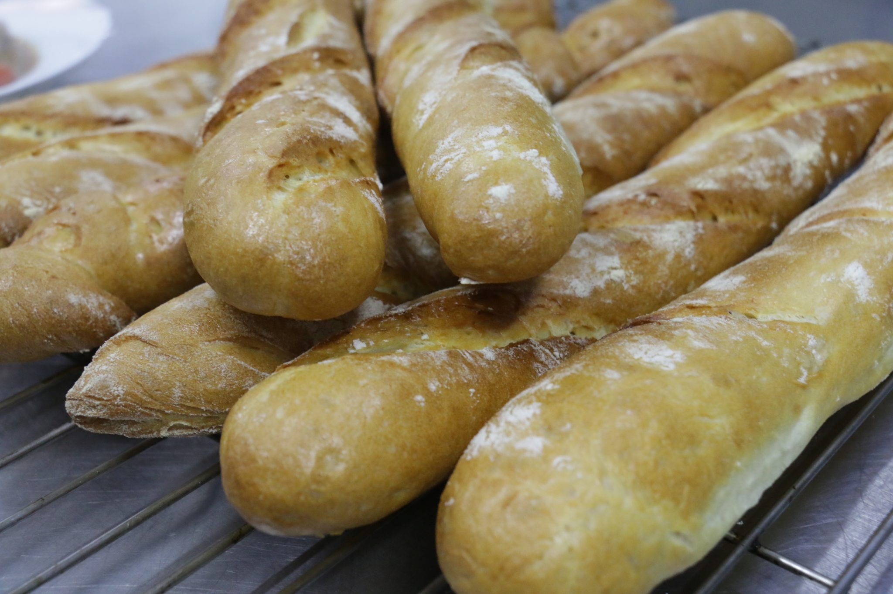
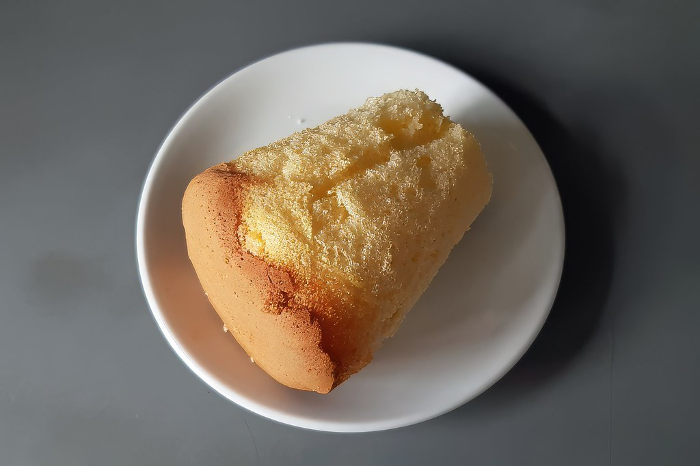
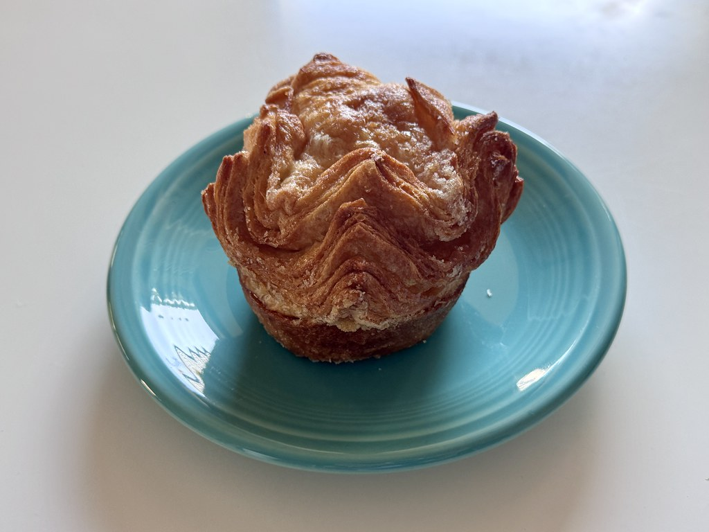
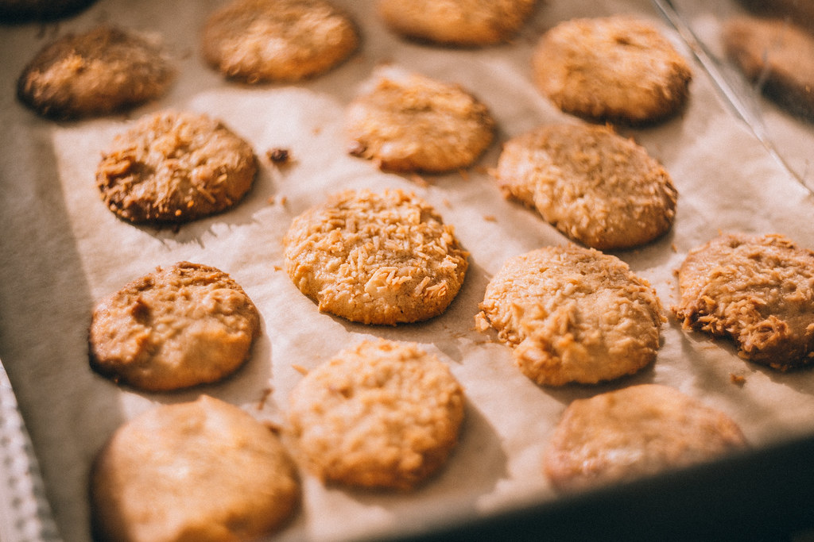
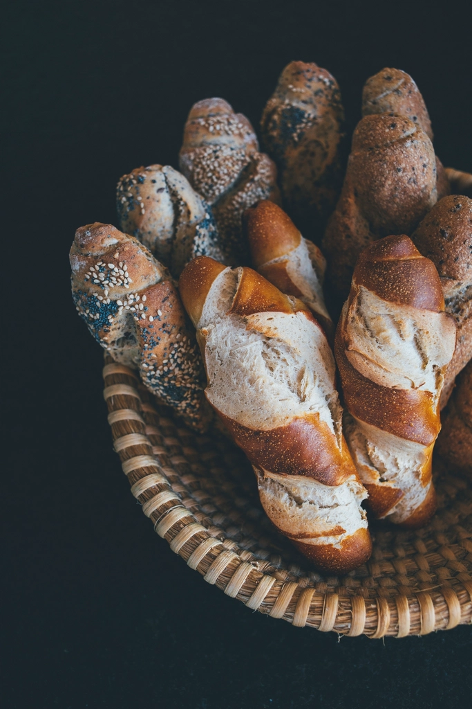

惣菜パンから甘いパン、食パンにハード系シフォンケーキカヌレサンドイッチ系と、小さめな外見にそぐわぬ色んなパンがあります。今回は惣菜パンとサンドイッチ買いましたが、今後もちょくちょく行って開拓したくなりました
── ご来店のお客様より・10か月前
屋号の由来
「プティカナール(Petit Canard)」は、フランス語で「小さなアヒル」という意味です。内野川のせせらぎが町を流れる、新潟市西区内野町。水辺がよく似合うこの旧商家町に、小さな水鳥の名を掲げたパン屋兼カフェがあります。店構えは名前の通りこぢんまりとしていますが、ケースをのぞくと「小さめな外見にそぐわぬ」という声をいただくほどの品揃え。小さなアヒルが運んでくる、ちょっと大きなときめきを覗きに来てください。




ラインナップ
惣菜パンから焼き菓子、食事パンまで。小さな店内にぎゅっと並ぶラインナップをご紹介します。
惣菜パン各種
焼きたての香りに誘われて、つい手が伸びる惣菜パン各種。ランチにも小腹満たしにも活躍する定番の一角です。価格は店頭にてご確認ください。

クッキークイニーアマン、塩パン、キャラメルスティック、クッキー、シフォンケーキ、カヌレ。甘い香りに包まれる、ケース奥の人気コーナーです。価格は店頭にてご確認ください。
食パン、バゲット、ハード系パン。素材の味をまっすぐ楽しめる、食卓の主役たちです。価格は店頭にてご確認ください。
 サンドイッチ
サンドイッチ
具材とパンのバランスを大切にしたサンドイッチ。お昼のひと品にどうぞ。価格は店頭にてご確認ください。
最新のラインナップはInstagramでも発信中です。 Instagramで見る
名物コーナー
覗くたび、ちょっとした福袋気分
プティカナールでは、前日に焼き上げたパンをお得な詰め合わせにしてご用意しています。ご来店のお客様からは「さながら福袋です」「このバリエーションの豊富さは、もはや地域貢献」といった声をいただくほど、地域で親しまれている人気のコーナーです。内容・数量・販売開始の時間帯は日によって異なります。最新情報はInstagramをご確認ください。
Instagramでおつとめ品情報をチェック内野町にて
プティカナールは、加茂市からの移転を経て、内野川沿いの旧商家町・新潟市西区内野町で営業しています。通りに面した店構えは決して大きくありませんが、ケースをのぞくと惣菜パンから焼き菓子、食パン、サンドイッチまでがずらりと並び、「小さめな外見にそぐわぬ」品揃えに驚かれるお客様も少なくありません。「おしゃれで可愛い店内」という声もいただいています。小さな存在にたくさんの魅力を詰め込む——それは、店名「プティカナール(小さなアヒル)」が体現している姿そのものかもしれません。

お客様から
Google口コミ 47件・平均評価4.1。ご来店のお客様からいただいた声の一部をご紹介します。
惣菜パンから甘いパン、食パンにハード系シフォンケーキカヌレサンドイッチ系と、小さめな外見にそぐわぬ色んなパンがあります。今回は惣菜パンとサンドイッチ買いましたが、今後もちょくちょく行って開拓したくなりました
── ご来店のお客様より・10か月前
おしゃれで可愛い店内、パンの種類が豊富で驚きました。
前日のパンの詰め合わせがお得に販売されていました。
シフォンケーキやクッキーなどのスイーツもありました。
甘い系と惣菜系を買いましたが、どれを食べてもおいしかったです。
値段も手頃で良いです。
少し遠いですが、また行きたいパン屋さんになりました。
── ご来店のお客様より・6か月前
何を食べても美味しいです。
惣菜系・スイーツ系・食パン・バゲット、バランスよいラインナップです。
昼過ぎでも種類豊富なので安心して立ち寄れます。
このバリエーションの豊富さは、もはや地域貢献!近所の人は幸せですね。
おつとめ品の詰め合わせも時々買わせていただきますが、さながら福袋です❤️
── ご来店のお客様より・7か月前
加茂市からの移転オープンらしいパン屋さん。
クイニーアマンや塩パン、スティック(キャラメル)を買って食べましたが、どれも美味しかったです。
とりあえず次に来たら他のパンも食べてみたいかな
── ご来店のお客様より・1年前
少量多品目のパンがあります。うれしくて、つい買いすぎてしまいました。心を落ち着かせてから入りましょう。おいしいです。
── ご来店のお客様より・3か月前
たくさんの声をいただき、励みにしております。日々のパンの様子はInstagramでもご覧いただけます。
アクセス
所在地
新潟県新潟市西区内野町
内野川沿いの旧商家町、新潟大学にもほど近いエリアにあります。